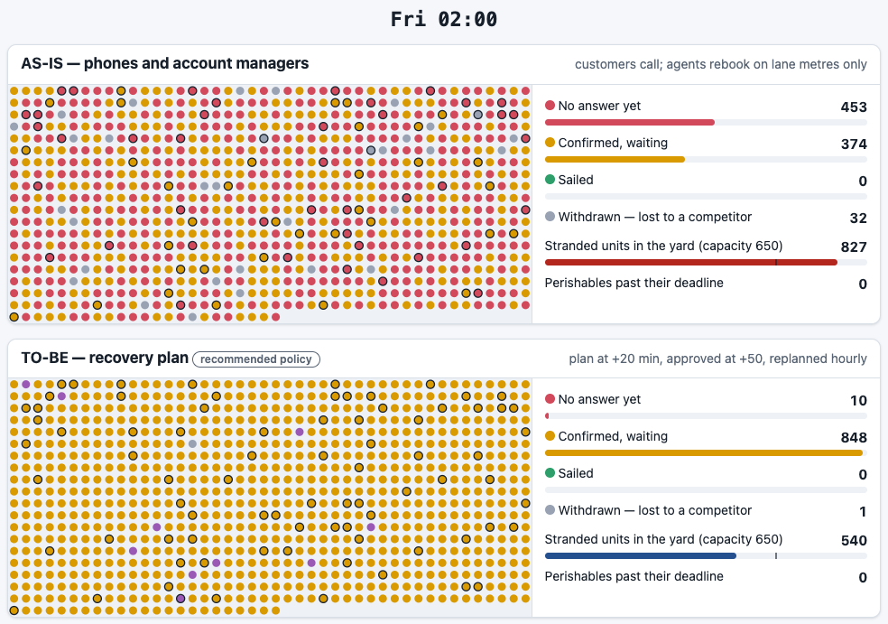

The situation. Thursday 16:00, a storm cancels three sailings and strands 859 trailers. Today rebooking waits for customers to call: perishables miss their deadline while frozen cargo sails, the yard overflows, and contract customers hear from their account manager the next morning. Sales, customer service and operations each asked for a different fix.
The reframe. Not “rebook faster” but time to certainty: every customer gets a new sailing, with a reason, within the hour, in an order all three departments can defend. A duty manager approves a rule-based recovery plan instead of waiting for phone calls.
| AS-IS | TO-BE | |
|---|---|---|
| Hours until 90% of stranded units have a confirmed sailing | 17.1 | 0.8 |
| Perishables sailing after their deadline | 21 | 10 |
| Hours the yard is over capacity | 12.7 | 0 |
| Hours drivers wait at the terminal | 3,361 | 1,841 |
| Units withdrawn to a competitor | 54 | 1 |
| Calls to customer service | 116 | 20 |
| Average delay | ±19 h | ±20 h |
The average delay does not change: a storm removes capacity and no rule creates a ship. The business case says so.
€763k 5-year NPV (P10 €382k, P90 €1,086k) · payback 13 months · 6.5% chance of a loss when all 44 assumptions are uncertain at once. A tornado chart names the three assumptions to verify first.

The same storm, replayed twice, at Friday 02:00. One dot per stranded unit: red = no answer yet, amber = new sailing confirmed, grey = withdrawn, ringed = perishable. Top: how it works today, where customers call and wait. Bottom: the recovery plan, built 20 minutes after the cancellation and approved by the duty manager at +50.
Every number above is regenerated in CI from 44 stated assumptions; a test fails if a document quotes a number the model does not produce. A traceability check fails the build on a pain nobody voiced, a rule nobody tested or an ID that does not exist. Built by one person with AI assistance; every decision and its reasoning is in the decision log.
Replay the night (2-minute tour): phlppgdfry.github.io/storm-night-disruption-business-analysis/war-room/?tour
Case and documents: github.com/phlppgdfry/storm-night-disruption-business-analysis